在 Foundry Toolkit 中构建智能体和提示词
Foundry Toolkit 中的 Agent Builder 简化了构建智能体的工程工作流，包括提示词工程以及与工具（例如 MCP 服务器）的集成。它可协助完成常见的提示词工程任务：
- 实时迭代和优化
- 提供对代码的便捷访问，以便通过 API 无缝集成大语言模型（LLM）
Agent Builder 还通过工具使用增强了智能应用的能力：
- 连接到现有的 MCP 服务器
- 从脚手架构建新的 MCP 服务器
- 使用函数调用连接外部 API 和服务
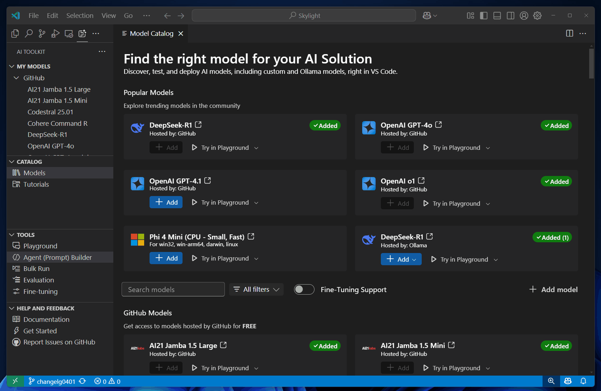
创建、编辑和测试提示词
要访问 Agent Builder，可使用以下任一方式：
- 在 Foundry Toolkit 视图中，选择开发人员工具 > 创建智能体 > 打开 Agent Builder
- 在 Foundry Toolkit 视图中，选择我的资源 > 你的项目名称 > 提示词智能体 > 选择任意提示词智能体
要在 Agent Builder 中测试提示词，请按以下步骤操作：
- 如果你尚未选择模型，请从 Agent Builder 中的模型下拉列表中选择一个。你还可以选择浏览模型从模型目录中添加不同的模型。
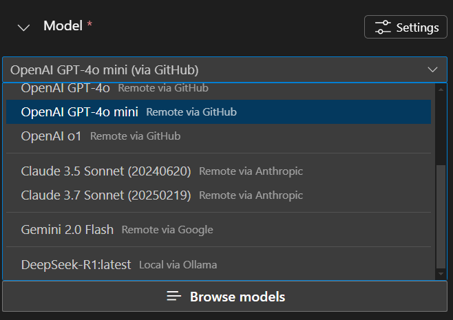
- 输入智能体指令。
使用指令字段准确告诉智能体要执行什么操作以及如何执行。列出具体任务，按顺序排列，并添加任何特殊指令，例如语气或交互方式。
- 通过观察模型响应并对指令进行修改来迭代优化你的指令。
- 使用
{{your_variable}}语法在指令中添加动态值。例如，添加一个名为user_name的变量，并在指令中像这样使用它：Greet the user by their name: {{user_name}}。 - 在变量部分为变量提供值。
- 在文本框中输入提示词，然后选择发送图标来测试你的智能体。
- 观察模型的响应，并对指令进行必要的调整。
使用 MCP 服务器
MCP 服务器是一种工具，可让你连接到外部 API 和服务，使智能体能够执行除文本生成之外的操作。例如，你可以使用 MCP 服务器来访问数据库、调用 Web 服务或与其他应用程序交互。
使用 Agent Builder 来发现和配置精选 MCP 服务器、连接到现有 MCP 服务器，或从脚手架构建新的 MCP 服务器。
[!NOTE]
使用 MCP 服务器可能需要 Node 或 Python 环境。Foundry Toolkit 会验证你的环境以确保安装了所需的依赖项。
安装后，使用命令npm install -g npx安装npx。如果你偏好 Python，建议使用uv。
配置精选 MCP 服务器
Foundry Toolkit 提供了一系列精选 MCP 服务器列表，可让你连接到外部 API 和服务。
要配置来自精选列表的 MCP 服务器，请按以下步骤操作：
- 在工具部分，选择 + MCP 服务器，然后在快速选择中选择 MCP 服务器。
- 从下拉列表中选择找不到？浏览更多 MCP 服务器。
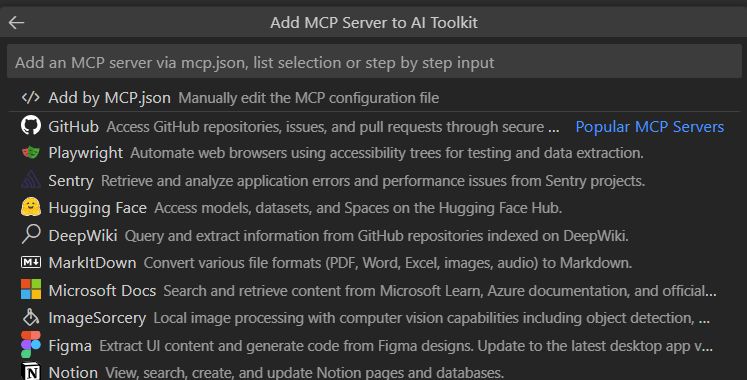
- 选择符合你需求的 MCP 服务器。
- 该 MCP 服务器将被添加到你的智能体中，位于工具下的 MCP 子部分。
从 VS Code 中选择工具
- 在工具部分，选择 + MCP 服务器，然后在快速选择中选择 MCP 服务器。
- 从下拉列表中选择使用在 Visual Studio Code 中添加的工具。
- 选择你要使用的工具。
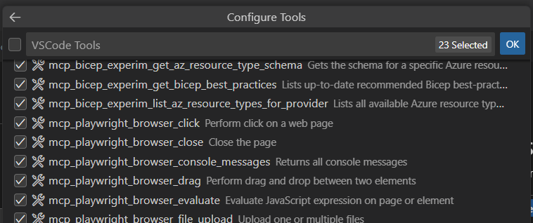
- 一个名为
VSCode Tools的 MCP 服务器工具将被添加到你的智能体中，位于工具下的 MCP 子部分。使用现有 MCP 服务器
[!TIP]
在这些参考服务器中查找 MCP 服务器。
要使用现有 MCP 服务器，请按以下步骤操作：
- 在 MCP 工作流部分，选择 + 添加 MCP 服务器。
- 或者在 Agent Builder 中，在工具部分，选择
+图标为智能体添加工具，然后在快速选择中选择 + 添加服务器。 - 在快速选择中选择 MCP 服务器。
- 选择连接到现有 MCP 服务器
- 向下滚动下拉列表到底部，可看到连接 MCP 服务器的选项：
- 命令 (stdio)：运行实现 MCP 协议的本地命令
- HTTP（HTTP 或服务器发送事件）：连接到实现 MCP 协议的远程服务器
以下是在 Foundry Toolkit 中配置文件系统服务器的示例：
- 在工具部分，在快速选择中选择 + MCP 服务器。
- 从下拉列表中选择找不到？浏览更多 MCP 服务器。
- 向下滚动下拉列表到底部，选择命令 (stdio)
[!NOTE]
某些服务器使用 Python 运行时和
uvx命令。该过程与使用npx命令相同。 - 导航到服务器说明并找到
npx部分。 - 将
command和args复制到 Foundry Toolkit 的输入框中。以文件系统服务器为例，内容为npx -y @modelcontextprotocol/server-filesystem /Users//.aitk/examples - 输入服务器的 ID。
- （可选）输入额外的环境变量。
某些服务器可能需要额外的环境变量，例如 API 密钥。在这种情况下，Foundry Toolkit 会在添加工具阶段失败，并打开文件 mcp.json，你可以在其中按照每个服务器提供的说明输入所需的服务器详细信息。
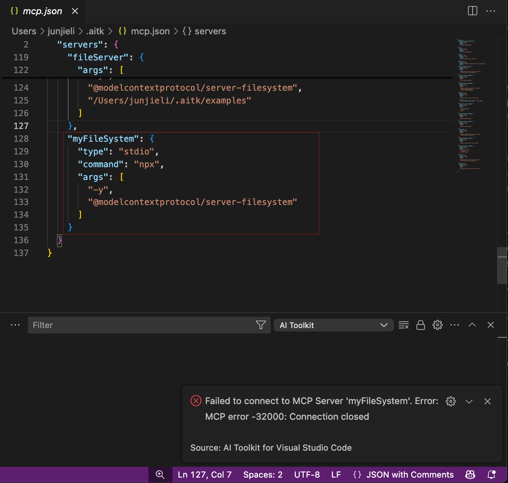
完成配置后：
- 导航回工具部分并选择 + MCP 服务器
- 从下拉列表中选择你配置的服务器
- 选择你要使用的工具。
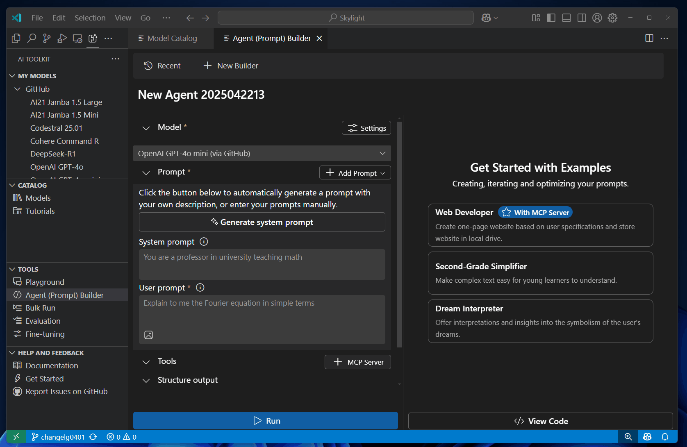
Foundry Toolkit 还提供了一个脚手架来帮助你构建新的 MCP 服务器。该脚手架包含 MCP 协议的基本实现，你可以根据自己的需求进行自定义。
构建新的 MCP 服务器
要构建新的 MCP 服务器，请按以下步骤操作：
- 在 MCP 工作流部分，选择创建新的 MCP 服务器。
- 从下拉列表中选择编程语言：Python 或 TypeScript
- 选择一个文件夹来创建新的 MCP 服务器项目。
- 输入 MCP 服务器项目的名称。
创建 MCP 服务器项目后，你可以根据自己的需求自定义实现。该脚手架包含 MCP 协议的基本实现，你可以修改它以添加自己的功能。
你还可以使用 Agent Builder 来测试 MCP 服务器。Agent Builder 将提示词发送到 MCP 服务器并显示响应。
按照以下步骤测试 MCP 服务器：
[!NOTE]
要在本地开发机器上运行 MCP 服务器，你需要：Node.js 或 Python 安装在你的机器上。
- 打开 VS Code 调试面板。选择
Debug in Agent Builder或按F5开始调试 MCP 服务器。 - 服务器将自动连接到 Agent Builder。
- 使用 Foundry Toolkit Agent Builder 通过以下指令启用智能体：
- "You are a weather forecast professional that can tell weather information based on given location."。
使用函数调用
函数调用将你的智能体连接到外部 API 和服务。
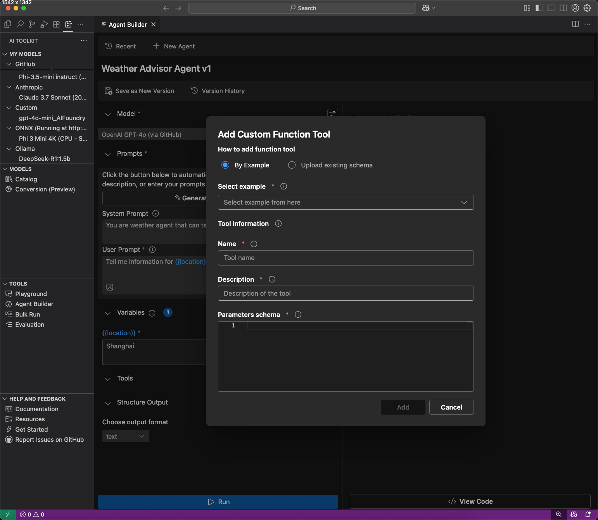
- 在工具中，选择添加工具，然后选择自定义工具。
- 选择添加工具的方式：
- 通过示例：从 JSON 架构示例添加
- 上传现有架构：上传 JSON 架构文件
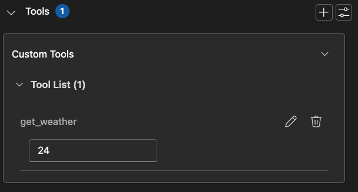
- 使用函数调用工具运行智能体。
在评估选项卡中通过为测试用例输入模拟响应来使用函数调用工具。
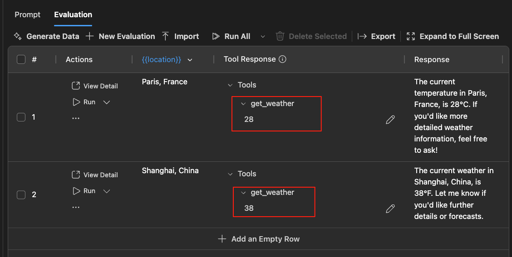
将提示词工程集成到你的应用程序中
在对模型和提示词进行实验后，你可以使用自动生成的 Python 代码立即开始编码。

要查看 Python 代码，请按照以下步骤操作：
- 选择查看代码。
- 对于托管在 GitHub 上的模型，选择你要使用的推理 SDK。
Foundry Toolkit 会使用提供商客户端 SDK 为你选择的模型生成代码。对于由 GitHub 托管的模型，你可以选择要使用的推理 SDK：Agent Framework SDK 或模型提供商的 SDK，例如 OpenAI SDK 或 Mistral API。
- 生成的代码片段会显示在新的编辑器中，你可以将其复制到你的应用程序中。
要向模型进行身份验证，通常需要提供商的 API 密钥。要访问 GitHub 托管的模型，请在 GitHub 设置中生成个人访问令牌 (PAT)。
代码片段和代码项目
使用 Agent Builder 右上角的选择器来查看代码或查看片段。
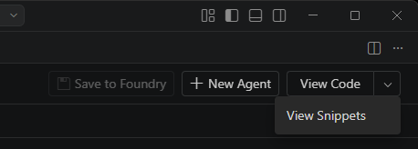
要在 Python 代码中使用你的提示词智能体，你可以选择以下任一方式：
- 查看代码会生成一个完整的项目，其中包含调用托管在 Foundry 中的提示词智能体的示例代码。你将被要求选择本地驱动器上的文件夹位置，然后整个项目将生成在该文件夹中，并在新的 Visual Studio Code 实例中打开。
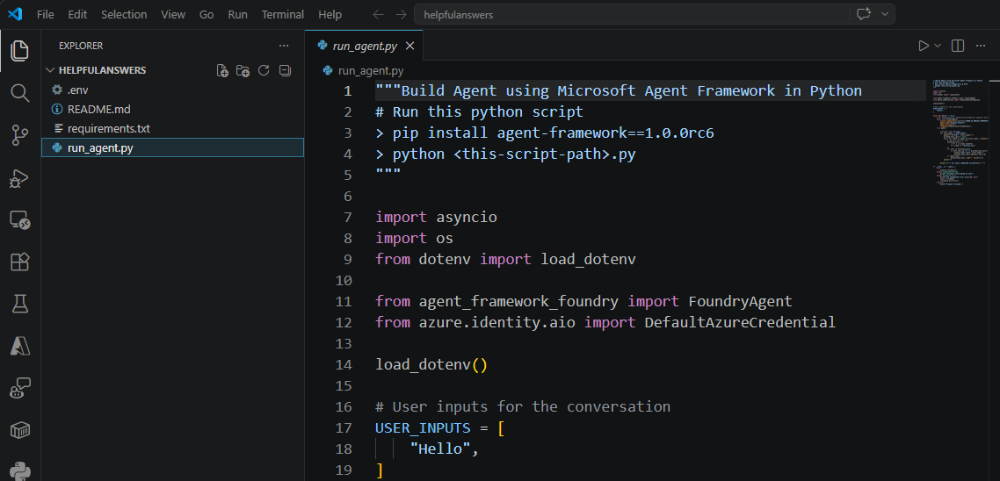
- 查看片段会生成一个调用托管在 Foundry 中的提示词智能体的单个文件片段。
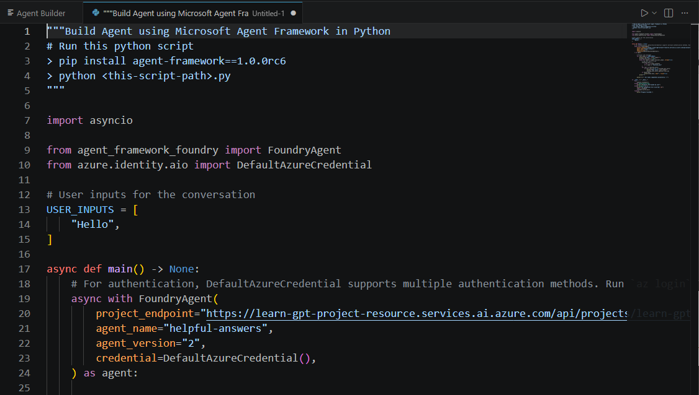
查看提示词智能体对话
Agent Builder 提供了对话的历史列表，这对于诊断和调试提示词智能体非常有用。
要查看与提示词智能体的测试对话详情，请使用对话选项卡。

从列表中选择一个对话将显示该对话的所有详细信息。
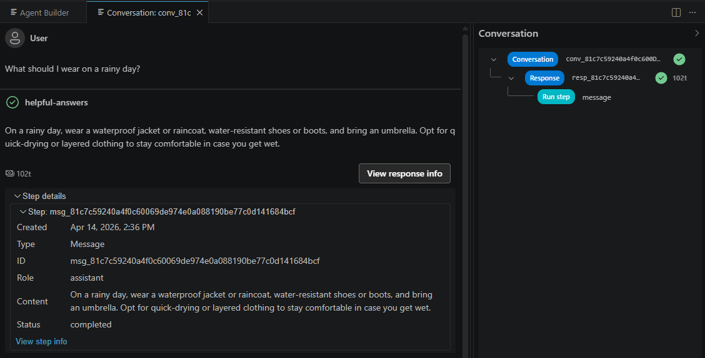
选择提示词智能体版本
每当你对提示词智能体进行更改并保存时，都会在你的 Foundry 项目中创建提示词智能体的新版本。要查看和操作 Playground 中的先前版本，请使用版本选择器。
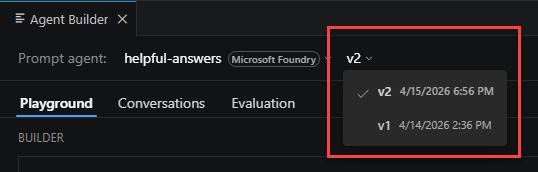
在 Agent Builder 中切换提示词智能体
Agent Builder 中的提示词智能体切换器允许你轻松地在与当前项目关联的提示词智能体之间切换，包括本地和托管在 Foundry 中的智能体。
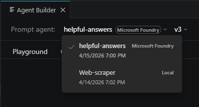
你学到了什么
在本文中，你学习了如何：
- 使用 VS Code 的 Foundry Toolkit 来测试和调试智能体。
- 发现、配置和构建 MCP 服务器，将智能体连接到外部 API 和服务。
- 设置函数调用以将智能体连接到外部 API 和服务。
- 实现结构化输出，从智能体中获得可预测的结果。
- 使用生成的代码片段将提示词工程集成到你的应用程序中。
后续步骤
- 为常用评估器运行评估作业